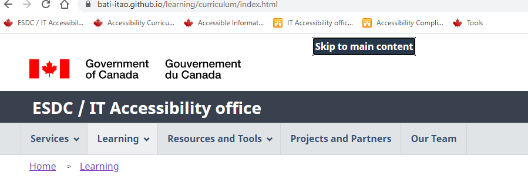
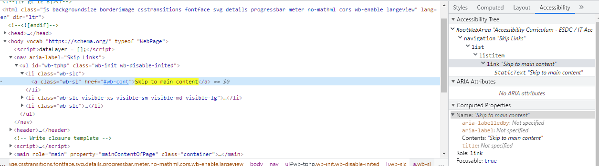
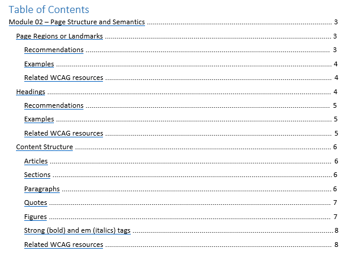
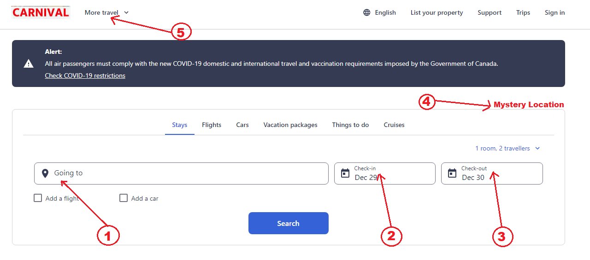

Navigation
Blocs de navigation
Identifiez sémantiquement les blocs de navigation importants sur une page avec l’élément <nav> ou l’attribut ARIA role=”navigation”. Chacun crée un point de repère de navigation ARIA, que les utilisateurs d’un lecteur d’écran peuvent cibler par commande du clavier.
S’il y a deux régions de navigation ou plus sur la page, nommez chaque région avec aria-label ou aria-labelledby pour les différencier.
L’indication du lien actuel dans un bloc de navigation est un exemple de critère de succès de niveau AAA des WCAG facilement réalisable. Deux choses sont essentielles :
- styliser le lien actuel pour qu’il se démarque visuellement; et
- définir un attribut
aria-current="page"sur le lien. L’attribut doit être défini sur le lien puisqu’il a tendance à fonctionner uniquement sur des éléments exploitables.
Bon exemple : Pagination
Ici, un menu de pagination pour les résultats de recherche est configuré dans un élément de navigation nommé. Le lien actuel est indiqué visuellement au moyen de CSS, et aux lecteurs d’écran au moyen de l’attribut aria-current="page".
CSS
Début du code
.current-page {
background-color: #ccc;
border: 1px solid black;
}
Fin du code
HTML
Début du code
<nav label="Résultats par page">
<ul>
<li>
<a href="[…]" aria-label="page 1">1</a>
</li>
<li class="current-page">
<a href="[…]" aria-current="page" aria-label="page 2">2
</li>
<li>
<a href="[…]" aria-label="page 3">3</a>
</li>
<li>
<a href="[…]" aria-label="page 4">4</a>
</li>
</ul>
</nav>
Fin du code
Ressources WCAG connexes
Ressources WCAG connexes
Critères de succès
- 1.3.1 : Information et relations
- 2.4.8 : Localisation (Niveau AAA)
Techniques
Liens de saut de navigation
Sur un site Web mal conçu, les utilisateurs du clavier doivent naviguer du haut de la page jusqu’à la zone de contenu principal, souvent à travers une longue liste de liens de navigation et d’autres éléments. Cela peut être fastidieux et même douloureux pour les utilisateurs ayant certaines formes de handicaps moteurs.
Un lien de saut de navigation permet aux utilisateurs de lecteur d’écran et aux utilisateurs du clavier voyants de naviguer directement vers le contenu principal à partir du haut de la page.
Un lien de saut n’est pas nécessaire si seulement quelques commandes séparent le contenu principal du haut de la page.
Suivez les pratiques exemplaires suivantes pour les liens de saut de navigation:
- Placez le lien de saut de navigation au haut de la page avant tout autre élément ciblable (lien, bouton ou commande personnalisée).
- Le lien de saut n’a pas besoin d’être visible avant d’avoir reçu la cible.
- Utilisez un lien clair – p. ex. « Passer au contenu principal » ou « Passer au contenu »
- Utilisez un lien de même page en ciblant la valeur de l’attribut d'identification de la destination (habituellement l’élément
<main>). - Attribuez l'attribut tabindex="-1" à la destination. Cela corrige les lacunes de certains navigateurs qui déplacent la fenêtre d'affichage vers la destination, mais pas vers la cible.
- Ne masquez pas le lien de saut en utilisant l’une des options suivantes :
- Utiliser CSS pour positionner de façon permanente l’écran de renvoi
- Régler
display: none - Régler
visibility: invisible
HTML
Début du code
<body>
<a id="skip-nav" class="show-with-focus" href="#main-content">Passer au contenu</a>
[...]
<main id="main-content" tabindex="-1">Le contenu principal entre ici</main>
</body>
Fin du code
CSS
Début du code
.show-with-focus {
position: absolute;
left: -1000px;
top:-1000px;
width: 1px;
height: 1px;
text-align: center;
overflow: hidden;
}
.show-with-focus: focus, .show-with-focus: active {
position: absolute;
left: 0;
top: 0;
width: auto;
overflow: visible;
background-color: #FF3;
border: 1px dotted #000;
}
Fin du code
Bon exemple : Passer au contenu principal
L'exemple commence
 L'exemple finit
Ressources WCAG connexes
Ressources WCAG connexes
Critères de succès
Techniques
- G1 : Ajouter un lien au début de chaque page pour aller directement à la zone de contenu principal (en anglais)
- G123 : Ajouter un lien au début d'un bloc de contenu répété pour aller à la fin de ce bloc (en anglais)
- G124 : Ajouter des liens au début de la page pour aller à chacune des zones du contenu (en anglais)
- SCR28 : Utiliser un menu extensible pour passer par dessus les blocs de contenu (en anglais)
Accès multiples
Fournir plus d’une façon de localiser une page Web dans un ensemble de pages Web. Des utilisateurs peuvent trouver une technique plus facile ou plus compréhensible à utiliser qu'une autre.
Utiliser au moins deux des techniques suivantes :
- Fournir des liens de navigation vers les pages Web reliées
- Fournir une table des matières
- Fournir un plan du site
- Fournir une fonction de recherche pour aider l'utilisateur à trouver le contenu
- Fournir une liste de liens vers toutes les autres pages Web
- Fournir des liens vers toutes les autres pages du site à partir de la page d'accueil
Exception: Notez que ce critère WCAG ne s'applique pas si la page page est le résultat ou une étape d'un processus.
Ressources WCAG connexes
Ressources WCAG connexes
Critères de succès
Techniques
Utiliser au moins deux des techniques suivantes :
- G125 : Fournir des liens de navigation vers les pages Web reliées (en anglais)
- G64 : Fournir une table des matières (en anglais)
- G63 : Fournir un plan du site (en anglais)
- G161 : Fournir une fonction de recherche pour aider l'utilisateur à trouver le contenu (en anglais)
- G126 : Fournir une liste de liens vers toutes les autres pages Web (en anglais)
- G185 : Fournir des liens vers toutes les autres pages du site à partir de la page d'accueil (en anglais)
Table des matières
Une table des matières sert deux objectifs :
- Elle donne un aperçu des principaux sujets du document et permet ainsi aux utilisateurs de visualiser le contenu sans avoir à défiler vers le bas et à lire ou à parcourir.
- Elle permet aux lecteurs de naviguer directement vers une section précise du document.
La table des matières pour une page doit refléter la structure d’en-tête de la page.
Une table des matières est particulièrement utile aux utilisateurs voyants ayant une déficience motrice, aux utilisateurs aveugles et aux utilisateurs de clavier.
Critère de succès 2.4.5 des WCAG : Les voies multiples exigent que les utilisateurs disposent de plusieurs moyens pour trouver les pages Web d’un site. Les blocs de navigation, la recherche, les cartes du site ou une table des matières peuvent appuyer ce critère du niveau AA.
Bon exemple : Table des matières
Dans cet exemple, une saisie d’écran d’une table des matières montre le texte d’en-tête sous forme de liens. Les en-têtes des niveaux 1, 2 et 3 sont inclus.
L'exemple commence
L'exemple finit
Ressources WCAG connexes
Ressources WCAG connexes
Critères de succès
Techniques
Ordre séquentiel logique
Les lecteurs d’écran lisent le contenu directement du DOM (un code sous-jacent d’une page après que JavaScript l’a modifié), et non l’écran réel. Ils ne tiennent pas compte des règles CSS. Il est possible d’utiliser CSS (flotteurs, positionnement, marges et remplissage) pour obtenir un ordre de lecture visuelle significatif alors que sous le capot, l’ordre de lecture du code sous-jacent (haut vers le bas) n’est pas logique. Voir l’exemple dans Échec F1 dans Ressources connexes WCAG, ci-dessous.
Supprimez le style CSS pour simuler l’expérience du lecteur d’écran. Le contenu devrait être logique, se lire de haut en bas.
Pour assurer un ordre de lecture logique, positionnez le contenu dans la même séquence que le code sous-jacent.
Ressources WCAG connexes
Ressources WCAG connexes
Critères de succès
Techniques
- G57 : Ordonner le contenu selon une séquence logique pour tout le contenu de la page Web( en anglais)
- C6 : Positionner le contenu selon le balisage structurel (en anglais)
- C27 : Faire en sorte que l'ordre du DOM corresponde à l'ordre visuel (en anglais)
Échecs
Cible et ordre de cible
Quelle est la cible?
La cible désigne la commande interactive à l’écran. Elle peut être un lien, une commande de formulaire, un bouton ou une commande personnalisée qui reçoit des entrées du clavier (et du presse-papiers lorsque vous collez du contenu).
La cible détermine où vont les événements du clavier dans la page. Par exemple, si vous ciblez un champ de saisie de texte et que vous commencez à taper, la cible reçoit les activités du clavier et affiche les caractères que vous tapez. Bien qu’elle soit ciblée, elle reçoit également du contenu collé provenant du presse-papier. Certaines des commandes natives ont même un soutien supplémentaire au clavier intégré. Par exemple, avec l’élément sélectionné ciblé, vous pouvez appuyer sur les flèches vers le haut et vers le bas pour sélectionner différents enfants et commencer à taper pour insérer automatiquement l’un des éléments disponibles.
Un élément avec cible comporte aussi ce qu’on appelle un indicateur visuel de cible ou anneau de cible. Son style dépend du navigateur ou du style appliqué par l’auteur de la page. Firefox, par exemple, affiche une bordure pointillée, tandis que Chrome met en évidence les éléments ciblés avec une bordure bleue.
Pour les utilisateurs du clavier, la cible est absolument essentielle. C’est l’équivalent d’un curseur de souris et c’est la façon dont ils peuvent atteindre toutes les commandes interactives d’une application.
Ce ne sont pas tous les éléments qui peuvent être ciblés. Les éléments non interactifs comme les images, les paragraphes, les divs et divers autres éléments de page ne sont pas ciblés lorsque vous parcourez la page à l’aide de la touche de tabulation. Cela se fait dès la conception étant donné que les utilisateurs n’ont pas besoin de se concentrer sur une chose en particulier s’ils ne peuvent pas interagir avec celle-ci.
Ordre de cible
Les utilisateurs du clavier naviguent d’un élément interactif à un autre à l’aide de la touche Tab, en ordre séquentiel, en suivant ce qu’on appelle l’ordre de cible. Ils utilisent les touches Maj-Tab pour reculer dans l’ordre de cible. Tout comme l’ordre de lecture, l’ordre de cible est déterminé par l’ordre source de la page Web. L’ordre des éléments interactifs (liens, boutons, commandes de formulaires et commandes personnalisées) dans le DOM est l’ordre dans lequel les utilisateurs du clavier les rencontrent.
L’ordre de navigation au clavier doit être logique et intuitif. Habituellement, cela signifie qu’il faut s’assurer que la navigation suit le flux visuel de la page, de gauche à droite, de haut en bas. Elle passe par la bannière, la navigation principale, la navigation et les commandes de la page, puis le pied de page d’une page type.
L’ordre de cible peut être confondu par JavaScript. Lorsque JavaScript insère un nouveau contenu, le contenu doit suivre l’élément déclencheur et non le précéder. Les utilisateurs du lecteur d’écran ne s’attendront pas à ce que le nouveau contenu tombe avant le déclencheur. La section du module 10 Gestion de la cible avec contenu injecté par JavaScript offre plus de détails.
Les éléments HTML interactifs intégrés – liens, boutons et commandes de formulaire – sont implicitement faciles à cibler, ce qui signifie qu’ils reçoivent par défaut la cible sans balise supplémentaire.
Pour recevoir une cible, un lien doit avoir un attribut href rempli.
Pour empêcher un lien de recevoir une cible, supprimez son attribut href.
Pour éviter qu’un bouton ou une commande de formulaire reçoive une cible, ajoutez l’attribut booléen “disabled”. Lorsqu’il est présent, l’élément n’est pas mutable, ciblable ou soumis avec le formulaire. L’utilisateur ne peut ni modifier ni cibler la commande, ni sur ses descendants de commande de formulaire. Vous pouvez également empêcher qu'une commande obtienne une cible en lui attribuant un attribut tabindex="-1".
Les liens et les commandes personnalisés nécessitent un attribut tabindex="0"� pour recevoir la cible. Voir le Bon exemple : Insérer un lien personnalisé dans l’ordre des onglets ci-dessous pour tous les attributs CSS, HTML et JavaScript requis pour imiter un lien. Important : Dans la mesure du possible, utilisez un élément HTML intégré au lieu de créer un contrôle personnalisé avec ARIA.
L'attribut tabindex
L’attribut tabindex sert surtout à gérer la cible dans les widgets. Voir la description du widget d’onglets dans le module ??.
- Une valeur d’attribut
tabindexde 0 place l’élément dans l’ordre de la cible, à son emplacement actuel dans le DOM. - Une valeur
tabindexde -1 élimine un élément interactif de l’ordre de la cible, mais permet de le cibler par script (et de le modifier) en utilisant sa méthode defocus(). Par exemple, avec le widget d’onglets, un seul onglet à la fois peut se trouver dans l’ordre des onglets : l’onglet sélectionné atabindex="0", tandis que les onglets inactifs onttabindex="-1". Les valeurs tabindex changent à mesure que l’utilisateur passe d’un onglet à l’autre, en utilisant les touches fléchées pour cibler un nouvel onglet. Voir la description du widget d’onglets dans le module ??. - Une valeur
tabindexsupérieure à 0 est presque toujours une mauvaise idée et doit être évitée. Elle déplace l’élément au début de l’ordre de cible de la page et se trouve en ordre ascendant avec toute autre valeurtabindexpositive. Les valeurstabindexpositives sont difficiles à maintenir et fragiles, et leur utilisation tend à confondre les attentes des utilisateurs quant à l’ordre de cible. Rédigez plutôt le document avec les éléments dans un ordre logique. Voir le Mauvais exemple : Conception de page avec valeurs d’index d'onglets positives, ci-dessous.
Bon exemple : Insérer un lien personnalisé dans l’ordre des onglets en utilisant tabindex="0"
Dans l’exemple ci-dessous, appuyez sur la touche Tab pour faire avancer la cible d’un lien à l’autre et sur les touches Maj-Tab pour faire reculer la cible.
Le troisième lien est un lien personnalisé :
- L'attribut
tabindex="0"ajoute l'élément span à l'ordre de cible. - L'attribut
role="link"l'identifie aux utilisateurs du lecteur d'écran. - L’attribut
class="link"permet de mettre le style en correspondance avec les liens par défaut et de fournir un indicateur de cible du clavier très visible. - L’événement
clicktraite la saisie à l'aide de la souris et la saisie tactile. - L’événement
keydowntraite la saisie à l'aide de la touche Entrée.
Voir le HTML
Début du code
<a href="http://www.bing.com" class="link">Bing</a>
<a href="http://www.duckduckgo.com" class="link">DuckDuckGo</a>
<span
tabindex="0"
role="link"
class="link"
onclick="goToLink(event, 'http://www.google.ca/')"
onkeydown="goToLink(event, 'http://www.google.ca/')">
Google
</span>
Fin du code
Voir le CSS
Début du code
<style type="text/css">
.link:focus, .link:hover {
outline: 3px solid orange;
}
span.link {
cursor: pointer;
color: #0000EE;
text-decoration: underline;
}
span.link:active {
color: #FF0000;
}
</style>
Fin du code
Voir le Javascript
Début du code
function goToLink (event, url) {
var type = event.type;
if ((type === 'click') || (type === 'keydown' && event.keyCode === 13)) {
window.location.href = url;
event.preventDefault();
event.stopPropagation();
}
}Fin du code
Le lien personnalisé JavaScript provient du document de l’Initiative pour l’accessibilité du Web (IAW) : Exemples de liens (en anglais seulement) dans le modèle de Lien Pratiques de rédaction IAW-ARIA 1.1. Matt King, Jemma Ku, James Nurthen, •oë Bijl, Michael Cooper. Copyright © 2019 W3C® (MIT, ERCIM, Keio).
Élément avec tabindex="-1"
Une valeur d’attribut tabindex="-1" supprime l’élément de l’ordre de cible, mais lui permet de recevoir une cible programmatique. Cela signifie que la cible peut être réglée à l’aide de la méthode JavaScript focus() de l’élément.
Bon exemple : Élément avec tabindex="-1" reçoit la cible par script
Dans cet exemple, le fait de cliquer sur le bouton cible l’élément div.
L'exemple commence
L'exemple finit
HTML
Début du code
<button type="button" onclick="document.getElementById('target').focus();">
Cliquez sur moi pour cibler la DIV
</button>
<div id="target" tabindex="-1">
Je suis une div
</div>
Fin du code
Élément avec tabindex > "0"
Using a tabindex attribute value greater than 0 is considered an anti-pattern.
Any tabindex greater than 0 jumps the element to the front of the natural tab order. If there are multiple elements with a tabindex > 0, then the tab order starts from the lowest value greater than zero and works its way up.
Positive tabindex values often create counter-intuitive flow for keyboard users. If you want an element to come sooner in the tab order, move it to an earlier spot in the DOM rather than set a positive tabindex value.
L’utilisation d’une valeur d’attribut tabindex supérieure à 0 est considérée comme un anti-pattern.
Tout tabindex supérieur à 0 fait passer l’élément à l'avant de l’ordre naturel des onglets. S’il y a plusieurs éléments dont le tabindex est supérieur à 0, l’ordre des onglets commence à partir de la valeur la plus faible supérieure à zéro et progresse.
Les valeurs positives des tabindex créent souvent un flux contre-intuitif pour les utilisateurs du clavier. Si vous voulez qu’un élément se retrouve plus tôt dans l’ordre des onglets, déplacez-le à un endroit plus tôt dans le DOM au lieu de fixer une valeur positive de tabindex
Mauvais exemple : Conception de page avec valeurs positives de tabindex
L’ordre des onglets lorsque l’utilisateur clique sur la page est le suivant :
- Le champ “Going to” (
tabindex="1") - Le champ “Check-in” (
tabindex="2") - Le champ “Check-out" (
tabindex="3") - Un objet mystère sans fonctionnalité et sans indicateur de cible visible (
tabindex="4") - “More travel”, puis suit l’ordre naturel des onglets (
tabindex="0").
L'exemple commence
L'exemple finit
Le tabindex positif est établi sur seulement quatre éléments de la page “Carnival”. Après avoir parcouru les valeurs tabindex positives, les utilisateurs du clavier sont renvoyés au haut de l’écran, à la première commande ciblable sur la page, au début de l’ordre naturel des onglets.
Un élément visuellement caché se trouve dans l’ordre des onglets sur la page, ce qui produit une cible « mystère » qui peut créer de la confusion. Si un élément est masqué visuellement, il ne doit pas être dans l’ordre des onglets.
Évitez d’utiliser des valeurs tabindex supérieures à 0. Rédigez plutôt le document avec les éléments dans un ordre logique. S’assurer que l’ordre du code source (DOM) correspond à l’ordre visuel afin d'éviter toute confusion chez les utilisateurs de technologie d’assistance.
Ressources WCAG connexes
Ressources WCAG connexes
Critères de succès
Techniques
- G59 : Placer les éléments interactifs dans un ordre qui reflète la séquence et les relations dans le contenu (en anglais)
- C27 : Faire en sorte que l'ordre du DOM corresponde à l'ordre visuel (en anglais)
- H4 : Créer un ordre de tabulation logique entre les liens, les éléments de formulaire et les objets (en anglais)
- SCR26 : Insérer le contenu dynamique dans le modèle objet de document (DOM) immédiatement après son élément déclencheur (en anglais)
- SCR27 : Réordonner les sections de la page en utilisant le modèle objet de document (DOM) (en anglais)
- SCR37 : Créer des dialogues personnalisés d'une façon qui soit indépendante du dispositif (en anglais)
Échecs
- F44 : Échec du critère de succès 2.4.3 consistant à utiliser l'attribut tabindex pour créer un ordre de tabulation qui ne préserve pas la signification et l'opérabilité (en anglais)
- F85 : Échec du critère de succès 2.4.3 consistant à utiliser des menus ou des dialogues qui ne sont pas adjacents au composant déclencheur dans l'ordre séquentiel de navigation (en anglais)
Raccourcis clavier de caractères
Un raccourci clavier est très pratique pour la plupart des utilisateurs, mais il constitue un obstacle important pour certains utilisateurs en situation de handicap si le raccourci ne comporte pas de touche non imprimable (p. ex., Ctrl, Alt). Simplement en parlant, les utilisateurs de la fonction d’entrée vocale déclencheront involontairement un raccourci composé uniquement de touches alphabétiques, puisque leur entrée vocale est convertie par le logiciel en une chaîne de caractères alphabétiques. Les utilisateurs susceptibles de frapper accidentellement des touches déclencheront également le raccourci.
Critère de succès 2.1.4 : Si un raccourci clavier est utilisé dans un contenu utilisant uniquement des lettres (y compris des majuscules et des minuscules), des signes de ponctuation, des chiffres ou des symboles, au moins un des énoncés suivants est vrai :
- Désactiver
- Un mécanisme permet de désactiver le raccourci;
- Remapper
- Un mécanisme permet de remapper le raccourci pour y inclure une ou plusieurs touches de clavier non imprimables (p. ex., Ctrl, Alt);
- Actif seulement sur la cible
- Le raccourci clavier d’un composant d’interface utilisateur n’est actif que lorsque ce composant a une cible.